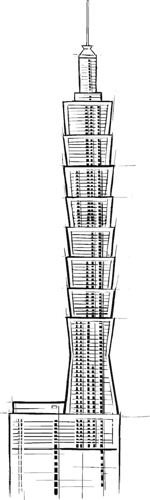

From the Penthouse to the Engine Room and Back

Architects play a critical role as a connecting and translating element, especially in large organizations where departments speak different languages, have different viewpoints, and drive toward conflicting objectives. Many layers of management only exacerbate the problem as communicating up and down the corporate ladder resembles the telephone game.1 The worst-case scenario materializes when people holding relevant information or expertise aren’t empowered to make decisions, whereas the decision makers lack relevant information. Not a good state to be in for a corporate IT department, especially in the days when technology has become a driving factor for most businesses.
Architects can fill an important void in large enterprises: they work and communicate closely with technical staff on projects, but are also able to convey technical topics to upper management without losing the essence of the message (Chapter 2). Conversely, they understand the company’s business strategy and can translate it into technical decisions that support it.
If you picture the levels of an organization as the floors in a building, architects can ride what I call the architect elevator: they ride the elevator up and down to move between a large enterprise’s board room and the engine room where software is being built. Such a direct linkage between the levels has become more important than ever in times of rapid IT evolution and digital disruption.
Stretching the analogy to that of a large ship, if the bridge officers spot an obstacle and need to turn the proverbial tanker, they will set the engines to reverse and the rudder to hard starboard. But if in reality the engines are running full speed ahead, a major disaster is preprogrammed. This is why even old steamboats had a pipe to echo commands directly from the captain to the boiler room and back. In large enterprises architects need to play exactly that role!
Coming back to the building metaphor, the number of floors an architect has to ride in the elevator depends on the type of organization. Flat organizations might not need the elevator at all—a few flights of stairs are sufficient. This also means that the up-and-down role of an architect might be less critical: if management is keenly aware of the technical reality at the necessary level of detail and technical staff have direct access to senior management, fewer “enterprise” architects are needed. We could say that digital companies live in a bungalow and hence don’t need the elevator.
The value of the architects in the elevator metaphor shouldn’t be measured by how “high” they travel but by how many floors they span.
However, classic IT shops in large organizations tend to have many, many floors above them. They work in a skyscraper so tall that a single architect elevator might not be able to span all levels. In this case, it’s OK if a technical architect and an enterprise architect meet in the middle and cover their respective “halves” of the building. The value of the architects in this scenario shouldn’t be measured by how “high” they travel but by how many floors they span. In large organizations, the folks in the penthouse might make the mistake of seeing and valuing only the architects in the upper half of the building. Conversely, many developers or technical architects consider such “enterprise” architects less useful because they don’t code. This can be true in some cases—such architects often enjoy life in the upper floors so much that they aren’t keen to take the elevator down ever again. But an “enterprise” architect who travels halfway down the building to share the strategic vision with technical architects can have a significant value.
Invariably you will meet folks who ride the elevator, but only once to the top and never back down. They enjoy the good view from the penthouse too much and feel that they didn’t work so hard to still be visiting the grimy engine room. Frequently you can identify these folks by statements like: “I used to be technical.” I can’t help but retort: “I used to be a manager” (it’s true) or “Why did you stop? Were you no good at it?” If you want to be more diplomatic (and philosophical) about it, cite Fritz Lang’s movie Metropolis in which the separation between penthouse and engine room almost led to the city’s complete destruction before people realized that “the head and the hands need a mediator.” In any case, the elevator is meant to be ridden up and down. Eating caviar in the penthouse while the basement is flooded isn’t the way to transform corporate IT.
Riding the elevator up and down the organization is also an important mechanism for the architect to obtain feedback on decisions and to understand their ramifications at the implementation level. Long project implementation cycles don’t provide a good learning loop (Chapter 36) and can lead to an “Architect’s Dream, Developer’s Nightmare” scenario, in which the architects have achieved their abstract ideals, but the actual implementation is impractical. Allowing architects to only enjoy the view from high up invariably leads to the dreaded authority without responsibility antipattern.2 This pattern can be broken only if architects have to live with, or at least observe, the consequences of their decisions. To do so, they must keep riding the elevator.
In the past, IT decisions were fairly far removed from the business strategy: IT was pretty “vanilla,” and the main parameter, or key performance indicator (KPI), was cost. Therefore, riding the elevator wasn’t as critical as new information was rare. Nowadays, though, the linkage between business goals and technology choices has become much more direct, even for “traditional” businesses. For example, the desire for faster time-to-market to meet competitive pressures translates into the need for an elastic cloud approach to computing, which in turn requires applications that scale horizontally and thus should be designed to be stateless. Targeted content on customer channels necessitates analytical models, which are tuned by churning through large amounts of data via a Hadoop cluster, which in turn favors local hard-drive storage over shared-network storage. The fact that in one or two sentences a business need has turned into application or infrastructure design highlights the need for architects to ride the elevator. Increasingly they need to take the express elevator, though, to keep up with the pace at which business and IT are intertwined.
In traditional IT shops, the lower floors of the building can be exclusively occupied by external consultants (Chapter 38), which allows enterprise architects to avoid getting their hands dirty. However, because it focuses solely on efficiency and ignores economies of speed (Chapter 35), such a setup doesn’t perform well in times of rapid technology evolution. Architects who are used to such an environment must stretch their role from being pure consumers of vendors’ technology roadmaps to actively defining it. To do so, they need to develop their own IT worldview (Chapter 16).
If you are riding the elevator up and down as a successful architect, you might encounter other folks riding with you. You might, for example, meet business or nontechnical folks who learned that a deeper understanding of IT is critical to the business. Be kind to those folks, take them with you, and show them around. Engage them in a dialogue—it will allow you to better understand business needs and goals. They might even take you to the higher floors you haven’t been to.
You might also encounter folks who ride the elevator down merely to pick up buzzwords to sell as their own ideas in the penthouse. We don’t call these people architects. People who ride the elevator but don’t get out are commonly called lift boys. They benefit from the ignorance in the penthouse to pursue a “technical” career without touching actual technology. You might be able to convert some of these folks by getting them genuinely interested in what’s going on in the engine room. If you don’t succeed, it’s best to maintain the proverbial elevator silence, avoiding eye contact by examining every ceiling tile in detail. Keep your “elevator pitch” for those moments when you share the cabin with a senior executive, not a mere messenger.
You would think that architects riding the elevator up and down are highly appreciated by their employer. After all, they provide significant value to businesses transforming their IT to better compete in a digital world. Surprisingly, such architects can encounter resistance. Both the penthouse and the engine room might actually have grown quite content with being disconnected: the company leadership is under the false impression that the digital transformation is proceeding nicely, whereas the folks in the engine room enjoy the freedom to try out new technologies without much supervision. Such a disconnect between penthouse and engine room resembles a cruise ship heading for an iceberg with the engines running at full speed ahead: by the time the leadership realizes what’s going on, it’s likely too late.
I was once criticized by the engine room for pushing corporate agenda against the will of the developers while at the same time corporate leadership chastised me for wanting to try new solutions just for fun. Ironically, this likely meant I found a good balance.
One can liken such organizations to the Leaning Tower of Pisa where the foundation and the penthouse aren’t vertically aligned. Riding the elevator in such a building is certainly more challenging. When stepping into such an environment, the elevator architect must be prepared to face resistance from both sides. No one ever said being a disruptor is easy, especially as systems resist change (Chapter 10).
The best strategy in these situations is to start linking the levels carefully, waiting for the right moment to share information. For example, you could begin by helping the folks in the engine room convey to management what great work they are doing. It will give them more visibility and recognition while you gain access to detailed technical information.
Other corporate denizens not content with you riding the elevator can be found on the middle floors: seeing you whiz by to connect leadership and the engine room makes them feel bypassed. Thus, the organization has an “hourglass” shape of appreciation for your work: top management sees you as a critical transformation enabler, whereas the folks in the engine room are happy to have someone to talk to who actually understands and appreciates their work. The folks in the middle, though, see you as a threat to their livelihood, including their children’s education and their vacation home in the mountains. This is a delicate affair. Some might even actively block you on your way: being stopped at every floor to give an explanation—aka aligning (Chapter 30)—makes riding the elevator not really faster than taking the stairs.
Lastly, because folks riding the elevator are rare, being good at one thing often leads others to conclude that you aren’t good at anything else. For example, architects giving meaningful and inspiring presentations to management are often assumed to not be great technologists, even though that’s the very reason their presentations are meaningful. So, every once in a while, you’re going to want to let the upper floors know that you can hold your own down in the engine room.
Instead of tirelessly riding the elevator up and down, why not get rid of all those unnecessary floors? After all, the digital companies your business is trying to compete with have much fewer floors. Unfortunately, you can’t simply pull some floors out of a building. And blowing the whole thing up just leaves you with a pile of rubble, not a lower building. The guys on the middle floors are often critical knowledge holders about the organization and IT landscape, especially if there’s a large black market (Chapter 29), so the organization can’t function without them in the near term.
Flattening the building little by little can be a sound long-term strategy, but it would take too long because it requires fundamental changes to the company culture. It also changes or eliminates the role played by the folks inhabiting the middle floors, who will put up a fierce resistance. This isn’t a fight an architect can win. However, an architect can start to loosen things up a little bit; for example, by getting the penthouse interested in information from the engine room or by providing faster feedback loops.
1 In the telephone game, children form a circle and relay a message from one child to the next. By the time the message returns to the originator, it typically has completely changed along the way.
2 “Authority Without Responsibility,” Wikiwikiweb, 2004, https://oreil.ly/WhXg-.